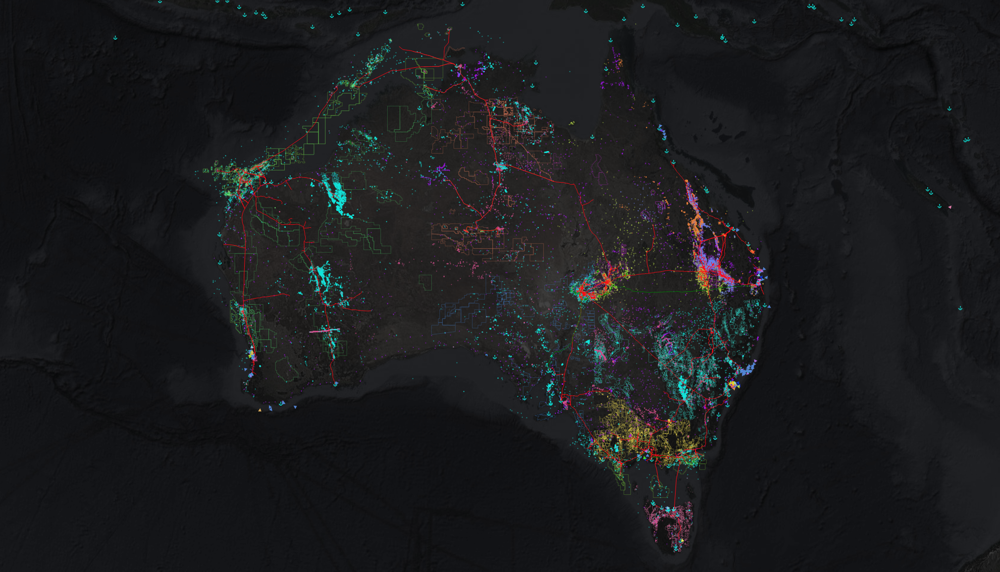
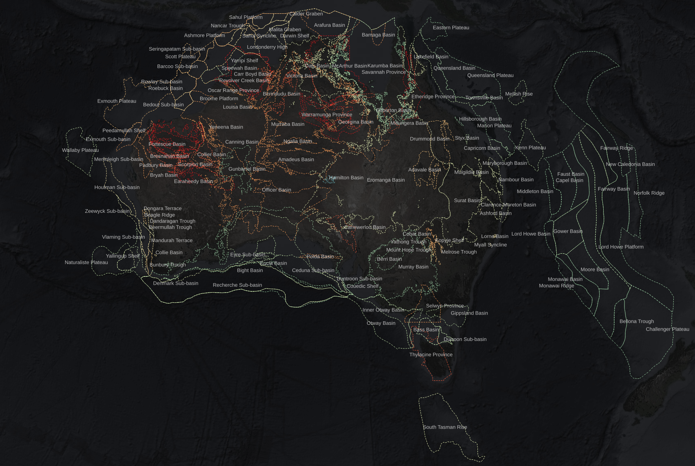
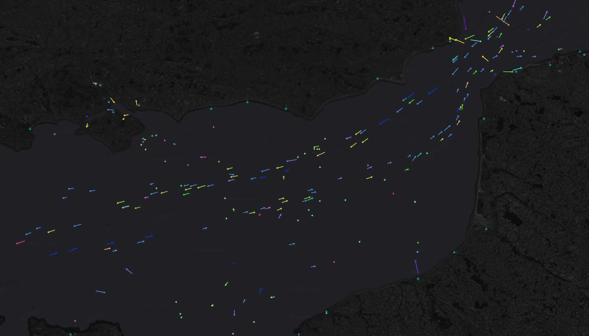

flowchart BT
public_data[Public Data]
market_data_etl[Markets]
aisstream_tanker_tracker[Vessel Tracker]
las_processor[LAS Processor]
pi[Pi Connector]
services[Custom Services]
postgres[(Database)]
security[Data Security Model]
presentation[Presentation Layer]
bi[BI Tools]
gis[GIS Tools]
excel[Spreadsheets]
petex[Petex]
integration[Custom Integrations]
analytics[Advanced Analytics]
security --> analytics
public_data ----> postgres
market_data_etl ---> postgres
aisstream_tanker_tracker --> postgres
las_processor --> postgres
pi ---> postgres
services ----> postgres
postgres --> security ---> presentation
presentation --> excel
presentation --> bi
presentation --> gis
presentation --> petex
presentation --> integration
“Structured data is the foundation of trustworthy AI.”
— Jensen Huang at the 2026 NVIDIA GTC keynote
“Structured data is the foundation of all the other stuff, too.”
— Me, just now
I’ve written before about the problem of relying on spreadsheets for storing and processing business critical data—and honestly that statement, or a blog post about it, aren’t enough to communicate how deep this problem goes.
Many smaller companies in this industry fall into the data trap because of the large investment in cloud infrastructure, data professionals and maintenance burden that comes with the territory.
The benefits of better systems are known—though perhaps a little unclear—but the steep path to reach them causes friction and delay.
With all the recent buzz around agentic AI, the need for an integrated system of record that can guarantee access to accurate and current business data has become more important than ever before—though even before the AI hype cycle it was already clear.
The distributed nightmare of spreadsheets scattered around SharePoint, surrounded by poorly integrated systems for handling workloads like GIS, hydrocarbon accounting and business intelligence reporting, causes humans and AI alike massive friction in using data effectively. Minimizing this kind of friction is a key part of the LD Informatics value proposition.
I’ve been building a bootstrapping kit that allows a company to go from zero to very high capability in a matter of days, instead of months to years—and continue building capability steadily from there.
The vision is to initialize the system of record and an entire automated platform around it with a small set of configurations and a single command, providing a day one step change in capability, while business specific integrations are developed in parallel.
All of the design choices made are informed by the fact that, for most of my career, I have been a consumer of these kinds of data. I know all the things I’ve always wanted to do my job effectively but I’ve never had them, so now we’re building them.
Maybe it isn’t the kind of project that necessarily needs a “brand”, because it will likely be rebranded for each client rollout, but I’m calling the bootstrapper DataBasin.

Data flows into the basin… though unlike sediments in actual basins, they are not buried forever, never to be seen again. Maybe I should have thought through the name a bit more.
Oh well!
What is DataBasin?
DataBasin is a data platform bootstrapping system that brings together a multi-purpose database, a rich data schema, a configurable data governance model, multiple services streaming public sources of data, and a presentation layer for GIS and BI applications.
It provides the ideal foundation for an efficient digital transformation, rapidly taking a company from spreadsheet hell to best-in-class data infrastructure, ready for technical workers, data professionals and AI agents alike to leverage it.
DataBasin is not a general-purpose toolkit. It is a toolkit built specifically for the oil and gas industry and its problem domains. It is not an off-the-shelf solution for your business to contort itself into, but a foundation for your own.
Out of the Box
With minor configuration (what parts of the world you care about) and a single command, the bootstrapper initializes:
- The DataBasin database
- A suite of GIS layers over your operating regions, including pipelines, tenements boundaries, wellbore locations, and sedimentary basin outlines
- Historical commodity prices, updated daily
- Live vessel tracking (tankers, cargo ships), globally or over your specific area of interest
- Supporting technical datasets like the geological timescale, eustatic sea level curves, paleoclimate indicators and stratigraphic systems
- A hydrocarbon accounting platform (ported from our enso system) to take measured data through to allocated, reportable production
- A well log petrophysics pipeline for generating detailed sand statistics, grouped by litho or chrono interval based on tops, ready for downstream technical workflows
- Core domain logic for computing key business metrics, configurable to business needs
- A semantic layer of clean data, ready for use directly in business intelligence tools (PowerBI, Tableau, etc) as well as spreadsheets
- An observability system for monitoring data pipelines and platform health
- A granular access control model to provide a foundation for data security and governance.
DataBasin is the base that provides all of this functionality, but everything is configurable to unique business requirements.
What makes this work?
DataBasin is built around a foundation of opinionated architecture (the trunk), supported by configurable and extensible services (the branches). PostgreSQL is a clear choice for the trunk of the platform, as it provides all the benefits of relational data modelling with best-in-class GIS support, rich extensibility, data security, and much more.
Below is a data infrastructure focussed overview of the system:
On a client-by-client basis, additional supporting services can be developed and deployed, integrating with existing systems, providing custom analytics, and much more.
This looks complicated
Implementations are complicated, but the concepts are not.
Fundamentally, the platform does 4 things:
- Stores data and relationships between data in tables
- Provisions data ingestion pipelines to automatically keep them correct and current
- Automates data transformation logic to perform critical business data workloads
- Provides a presentation layer for rich, clean data endpoints
It is a maintainable and configurable system. There is a reason it is built the way it is—it is not a pile of impossible to track spaghetti application code, or a cobweb of interconnected spreadsheets and macros—it is a data platform built for a domain, and it does its job efficiently and elegantly.
In other industry contexts, where provisioning services to customers or other businesses creates potentially billions of transactions to manage, a whole swathe of data engineering challenges exist that do not apply here. DataBasin models a physical domain where data is generally sparse and expensive to acquire, and is served to a small technical community who use it to do their work.
Small data—dense, integrated schema.
This creates a different playbook, and it is one I’ve spent most of my career refining—first in spreadsheets, then in python scripts, and now in this data platform.
The best thing about small data is that everything can be integrated into a single system.
Integration is everything

The key philosophy guiding all of this is data integration. Aggregating a bunch of data sources can be useful, but the real power of bringing things into a single system is integration. Cross-referenced datasets, held together in a rich relational model, make the system much more than a storage solution—it becomes a queryable representation of the physical and commercial domains of the business.
Business departments may separate teams into technical silos—treating reservoir engineering, geology, geophysics and commercial as separate disciplines—but this siloing should be avoided when it comes to data. All data is interrelated—from the physical systems being modelled in the subsurface, to the production facilities above them, to the business operations that ultimately deliver value to shareholders. Vertically integrate the data stack, and your business will reap the benefits.
Maybe you sense that you don’t have the internal technical chops to actually make use of that level of data integration, but AI agents will. If your data model can handle it, the limit is the creativity of your staff—but without it, humans and AI alike will be bottlenecked navigating distributed, opaque systems with no guarantees of data currency, consistency or accuracy.
Example Functionality
Here are some examples of why I’m so focussed on data integration.
Automated, enhanced sand statistics
This example is the original inspiration for the name “DataBasin”.
The LAS pipeline that DataBasin includes allows for detailed summary statistics to be generated dynamically. Combined with the numerous supporting technical datasets that are ingested during the bootstrapping process, this becomes an extremely powerful system.
flowchart TD
las[LAS files] --> flags[Log to flag data pivot]
flags --> db[(DataBasin)]
db --> stats[Compute sand statistics]
db --> enrich[Enrich with geochronology, reference datasets, GIS]
db --> tops[Cross reference to litho/chrono tops]
enrich --> stats
tops --> stats
stats --> outputs[GIS / BI / analytics]
Sand intervals (along with coal, carbonate, shale, or whatever other lithological flags are used) are loaded into the database as “porous intervals”, which store a top and base depth, along with summary statistics of key log derived properties.
These are generated directly by the pipeline from LAS files, allowing hundreds to thousands of logs to be processed in minutes, storing canonical data cross referenced to wellbores at the individual flag level.
Combining this with stratigraphic or chronostratigraphic intervals interpreted at wellbores allows for summary statistics by interval and lithology, like the count of porous intervals, the total thickness across them, and thickness-weighted average properties, to be calculated dynamically by a database view and served to any endpoint for analysis.
This includes geospatial analysis, since the interval picks are geolocated, allowing for geostatistical workflows to consume perfectly formatted and preprocessed data, with zero data wrangling required.
If matching to chronostratigraphic intervals, the database can also provide estimates of sedimentation rates, mean eustatic sea level and paleoclimatic conditions based on canonical reference data, modelled and loaded as part of the platform bootstrapping process.
If chronostratigraphic intervals have a geographic estimate of sediment provenance in a particular basin, then every porous interval can also have an estimated transport distance associated with it, calculated dynamically by the GIS engine.
Since the database can output geographic layers seamlessly, all of this can be represented as not only clean, tabular data, but map layers in GIS software as well.
Because porous intervals are cross-referenced to wellbore perforations, this same workflow can also provide perforation-level reservoir property views.
This kind of data enrichment is one of the key benefits of an integrated technical data platform. Data integration turns month long research projects into SQL queries that run almost instantly, and leverage the latest data available.
Paleo sand statistics
We can go even further with this. With a chronostratigraphic system and sand intervals loaded into the database, we can estimate age of deposition. That is nice, but on its own hard to leverage beyond an intellectual curiosity… but crazy things start happening when you integrate datasets.
So here’s a thought:
We can store tectonic plate boundaries in the database.
We can also store the movement histories of those tectonic plates.
That means we can reconstruct plate boundaries through geological deep time… but we can apply those transforms to all of our sand intersections, as well!
Now all of the sands in your company database don’t just have dynamically generated, modern day sand statistics, they also have estimates of
- mean sea level
- paleoclimate indicators
- and paleocoordinates!
flowchart TD
sand[Sand interval intersection] --> plate[Resolve host tectonic plate]
plate_bounds[Tectonic plate boundaries] --> plate
plate --> age[Resolve depositional age from chronostrat system]
chrono[Chronostratigraphic intervals] --> age
age --> paleo[Compute paleocoordinates from plate motion history]
plate_motion[Plate motion histories] --> paleo
sea_level[Eustatic sea level curves] --> enrich[Join paleo-environmental indicators]
paleoclimate[Paleoclimate indicator datasets] --> enrich
paleo --> enrich
enrich --> outputs[Paleo-enriched sand dataset for GIS / BI / analytics]
The paleo longitude isn’t of much interest (unless you care about the sleep schedule of your reservoirs), but the paleolatitude is a helpful indicator of the climatic conditions of the sedimentary system that deposited them. And your database can turn that research project into a SQL query!
This workflow is still in development, so I don’t have any images to show proof that this system is working, but I will publish a follow up post once it is.
Flag-level pressure compartment analysis
Porous intervals can be associated with pressure compartments, allowing for highly granular interpretations of what intervals are connected to draining reservoirs, with essentially zero upscaling. This allows subsurface teams to build extremely detailed, canonical reservoir models, which downstream workflows like dynamic reservoir simulation can upscale from.
flowchart TD
intervals[Porous interval flags] --> link[Interval to compartment links]
pressures[Pressure measurements] --> link
link --> compartments[Pressure compartment map]
compartments --> model[Reservoir connectivity model]
model --> simulation[Dynamic simulation inputs]
model --> outputs[GIS and BI outputs]
This may sound like an unrealistic level of detail, but—considering the AI tools we now have access to—I think “unrealistic” is becoming a strained term. Wiring up a thousand porous intervals to the correct pressure compartments across a mature field is an agentic AI workflow problem now, rather than a laborious exercise that nobody would ever bother attempting.
Hydrocarbon accounting and JV management
The enso graph-based production allocation and accounting system is fully portable into DataBasin, allowing the platform to serve as the canonical source of meter to reportable production data if the client desires the system to perform that workload.
The allocation and accounting systems sit alongside the GIS system, along with all technical and commercial data, so canonical production data does not need to be moved somewhere else so that subsurface and commercial teams can benefit from it—it is already where it needs to be.
If an existing system is already set up, DataBasin can integrate with it instead, providing an integrated system-of-record alongside the existing allocation system, providing the same data integration benefits.
Fluid Composition/PVT data management
Because porous intervals, stratigraphic/chronostratigraphic tops, wellbores and fluid samples are all mapped in the database, fluid compositional data can be placed in both its reservoir and geographic context seamlessly. DataBasin utilizes a normalized geochemistry schema to flexibly store lab data of this kind, allowing canonical oil/gas/water geochemistry data to be presented as preconfigured views based on the particular client requirements. This flexibility allows generic PVT data loaders to work with the wide variety of formats that this data is received in.
Place rich fluid compositional data on a map, or a 3D canvas, or cross plot it in BI software, or build advanced analytics on top of it. Everything is integrated and structured to serve whatever endpoints are desired.
Automated prospect screening
Prospect polygons can draw from the porous interval database, utilizing inverse distance weighted averages to provide plausible rock property parameters. Combined with the area of the polygon and some composition and depth-based formation volume factor calculations, screening volumetrics can be run to provide a quick-look prospect ranking system.
flowchart TD
prospects[Prospect polygons] --> idw[IDW interpolation of nearby porous interval properties]
porous[Porous interval database] --> idw
prospects --> area[Compute polygon area]
composition[Fluid composition assumptions] --> fvf[Formation volume factor calculation]
depth[Depth surfaces / interval depths] --> fvf
idw --> vols[Screening volumetrics]
area --> vols
fvf --> vols
vols --> rank[Prospect ranking / high-grading]
rank --> map[Dynamic GIS / BI prospect layer]
leases[Lease boundaries] --> lease_rollup[Lease-level opportunity roll-up]
rank --> lease_rollup
lease_rollup --> heatmap[Opportunity concentration heat maps]
This can enable hundreds of prospects to be evaluated automatically, allowing for high grading of opportunities for further study. As a dynamically calculated layer, these metrics will be available for all prospect polygons ingested into the database, with no additional work required.
If a lease level roll-up is desired to help inform new ventures teams where opportunities are concentrated, those boundaries are sitting in the database as well, ready to be aggregated across and presented as heat maps.
Live vessel tracking
The database stores live vessel positions, which are frequently updated with a lightweight service. This information allows for plotting vessel positions geographically, while also generating vector stream diagrams indicating speed and bearing, as well as projected position indicators that dynamically estimate current locations based on the last known speed and bearing.

Ports are also geolocated. The intention here is that clients can specify key vessels and ports to allow for dynamic tracking and time/distance to final destination calculations. Commercial teams can leverage this kind of information to get ahead of disruptions in business, taking predictive, rather than reactionary, measures.
If you’re wondering, yes, this data integration was inspired by the ongoing situation in the Strait of Hormuz.
Deployment Patterns
The intention is for DataBasin to be deployed on company cloud infrastructure, whether that is AWS, GCS or Azure. The use of the Infrastructure as Code (IaC) solution Terraform means the deployment pattern is rapid and repeatable.
On-premises or managed solutions can also be deployed where that is the best fit for the business.
The operating standard is that no “Click Ops” is ever used (configuring cloud services manually using provider web interfaces). Everything is version controlled, auditable and repeatable as code.
A dedicated secure subnet, where all server provisioning and inter-service networking is preconfigured out of the box, makes deployment highly efficient, requiring only a network connection from the DataBasin subnet to the company internal network.
Migration to a new system inevitably takes time as legacy systems are moonlit in favor of database centred operations… but DataBasin is built to deliver value from day one, getting more and more valuable as it is integrated into the business, eventually becoming the canonical system of record.
A roughly mapped out engagement looks something like this:
sequenceDiagram
participant Ops as Business Operations
participant Legacy as Existing Systems
participant DB as DataBasin
participant LDI as LD Informatics
LDI->>Ops: Assess current systems and define Day 1 scope
Ops->>Legacy: Continue existing workflows
LDI->>DB: Deploy starter kit + configure platform
DB-->>Ops: Day 1 GIS and supporting datasets
Ops->>LDI: Define client-specific requirements
LDI->>DB: Build client-specific functionality
DB-->>Ops: Expanded analytics and operational workflows
LDI->>Ops: Validate parity/enhancement vs legacy outputs
Ops->>Legacy: Sunset legacy workflows
Ops->>DB: DataBasin becomes system of record
DB-->>Ops: Existing + enhanced analytics and reporting
DB->>LDI: Platform health observability
LDI-->>DB: Ongoing support and iterative improvements
The intention is to develop and deploy in parallel with existing systems, until the time that existing systems can be decommissioned. This guarantees business as usual operations during the deployment process. Parity with existing data endpoints + enhancement is the baseline business outcome expectation—we would consider anything less than that a project failure.
Contact us
This post is about technical sharing more so than marketing, but—if your team is looking for a foundational data system, or struggling with existing systems, or filling gaps with spreadsheets—reach out to us, we can build and deploy capability fast.
nicholas.dorsch@ld-informatics.com
Thanks for reading.